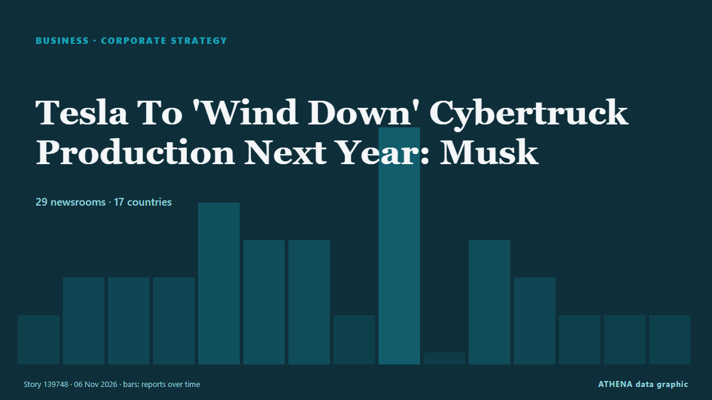

Tesla To 'Wind Down' Cybertruck Production Next Year: Musk

Tesla will stop building the truck at its Texas factory around the middle of 2027 to free up space for its Cybercab robotaxi, Musk said. من NDTV
نشرته بشكل مستقل 39 مصدرًا في 22 دولة منذ 6 نوفمبر، وأول من نشره CNA (Channel NewsAsia)؛ والتغطية تتراجع. يقدّر ATHENA الخطر بأنه معتدل (3.7/10)، ويعود ذلك أساسًا إلى خطورة الضرر الموصوف ونطاقه الجغرافي والقطاعي. الثقة 87٪ (مرتفعة)، وعدد المصادر المستقلة المؤكِّدة: 39، بمتوسط موثوقية للمصادر يبلغ 74٪. وسائل الإعلام حسب البلد: الولايات المتحدة (12), المملكة المتحدة (4), سنغافورة (2). التغطية: من 6 نوفمبر إلى 6 نوفمبر، 17 ساعة.
لماذا يهم: تُظهر أخبار الشركات والاستثمار إلى أين تتجه رؤوس الأموال وأي القطاعات تكسب أو تخسر.
ما الذي تغيّر: 41 تقارير جديدة من 39 غرف أخبار خلال 24 ساعة حتى 7 نوفمبر.
العنوان الأول: Tesla to wind down Cybertruck production at Texas factory as it struggles to win appeal
تُعرض العناوين بالإنجليزية كما نُشرت.
نظرة سريعة
اختير وقُيِّم وكُتب وفق منهجية ATHENA المنشورة. لا يتدخل أي محرر في الأحداث بعينها. كيف يُنتَج ›
| 06 Nov 07:05 UTC | 1 |
|---|---|
| 06 Nov 08:05 UTC | 2 |
| 06 Nov 09:05 UTC | 2 |
| 06 Nov 10:05 UTC | 2 |
| 06 Nov 11:05 UTC | 4 |
| 06 Nov 12:05 UTC | 3 |
| 06 Nov 13:05 UTC | 3 |
| 06 Nov 14:05 UTC | 2 |
| 06 Nov 15:05 UTC | 6 |
| 06 Nov 16:05 UTC | 0 |
| 06 Nov 17:05 UTC | 3 |
| 06 Nov 18:05 UTC | 2 |
| 06 Nov 19:05 UTC | 2 |
| 06 Nov 20:05 UTC | 3 |
| 06 Nov 21:05 UTC | 3 |
| 06 Nov 22:05 UTC | 1 |
| 06 Nov 23:05 UTC | 1 |
| 07 Nov 00:05 UTC | 1 |
| 06 Nov 10:29 UTC | 0.0 |
|---|---|
| 06 Nov 14:13 UTC | 1.3 |
| 06 Nov 15:38 UTC | 2.5 |
| 06 Nov 20:37 UTC | 4.0 |
| 07 Nov 00:13 UTC | 3.7 |
لماذا هذه الأرقام
الأهمية
الخطر
الثقة
التغطية — من نشر الخبر ومتى
العنوان كما نُشر · يفتح الأصل- CNA (Channel NewsAsia) · سنغافورةTesla to wind down Cybertruck production at Texas factory as it struggles to win appeal
- The Business Times · سنغافورةTesla to wind down Cybertruck production at Texas factory as vehicle struggles to win appeal
- Forbes Business · الولايات المتحدةMusk Says Tesla Will Wind Down Cybertruck Production Next Year
- The National · الإمارات العربية المتحدةElon Musk says Tesla will stop making Cybertrucks in 2027
- BBC News · المملكة المتحدةElon Musk appears to signal the end of the road for Cybertruck
- Oman Observer · عُمانTesla to end Cybertruck production next year
- The Verge · الولايات المتحدةTesla is ‘winding down’ production of the Cybertruck next year
- Electrek · الولايات المتحدةTesla to end Cybertruck production as sales stall at ~10% of plan
- Engadget · الولايات المتحدةTesla is 'winding down' Cybertruck production at its Texas Gigafactory
- TechCrunch · الولايات المتحدةTesla will stop making the Cybertruck in 2027
- MyJoyOnline · غاناElon Musk appears to signal the end of the road for Cybertruck
- Express Tribune · باكستانTesla to pull the plug on Cybertruck after years of poor sales
- Guardian Business · المملكة المتحدةTesla to wind down Cybertruck production as Elon Musk focuses on robotics and AI
- Nile Post · أوغنداElon Musk appears to signal the end of the road for Cybertruck
- Anadolu Agency (English) · تركياMusk signals Cybertruck production wind-down as Tesla shifts focus to Cybercab
- Decrypt · الولايات المتحدةTesla to Wind Down Cybertruck Production as Elon Musk Pivots to Robotaxis and AI
- Electrek · الولايات المتحدةTesla hikes Cybertruck prices up to 10% after announcing it will kill production
- Times of India · الهندElon Musk: Tesla to end Texas Cybertruck production to make way for Cybercab
- BBC News · المملكة المتحدةWatch: Is it the end of the road for Tesla's Cybertruck?
- CNBC World · الولايات المتحدةTesla to wind down Cybertruck production in Texas next year to ramp Cybercab, Musk says
- Dawn · باكستانElon Musk's futuristic Cybertruck rolls toward exit
- TRT World · تركياTesla winds down production of struggling Cybertruck
- Al Jazeera English · قطرMusk says Tesla to wind down polarising Cybertruck production as sales lag
- The Irish News (Belfast) · المملكة المتحدةTesla ‘winding down’ production of Cybertruck, says Musk
- The Next Web · هولنداTesla to wind down Cybertruck production in mid-2027 to build Cybercabs
- DW English · ألمانياTesla to 'wind down' production of flop Cybertruck
- Inc. · الولايات المتحدةElon Musk Is Killing the Cybertruck. Its Ghost Will Live on in a Controversial New Vehicle
- New York Times Business · الولايات المتحدةTesla Is Ending Production of Its Cybertruck and Refocusing on the Cybercab
- NDTV · الهندTesla To 'Wind Down' Cybertruck Production Next Year: Musk
- Bangkok Post — page reader · تايلاندMusk’s futuristic Cybertruck rolls toward the exit
- The Jerusalem Post · إسرائيلTesla to pull the plug on Cybertruck after years of poor sales
- CBC News (alternative feed) · كنداTesla will stop making Cybertrucks next year: Musk
- The Korea Times · كوريا الجنوبيةTesla to pull the plug on Cybertruck after years of poor sales
- The Canadian Press (via CityNews) · كنداTesla’s Cybertruck heads for an exit after years of hype and division
- BusinessDay (Nigeria) · نيجيرياTesla’s Cybertruck heads for exit as electric pickup loses market appeal
- APA (English) · أذربيجانProduction of Tesla's Cybertruck to wind down soon with allure escaping most shoppers
- Fortune · الولايات المتحدةElon Musk once said the Cybertruck would be Tesla’s ‘best product ever.’ Now he’s winding down production
- Fast Company · الولايات المتحدةRIP Cybertruck: The perfect symbol for all of Elon Musk’s mistakes
- Colombia One · كولومبياTesla to Wind Down Cybertruck Production After Years of Poor Sales
- Sydney Morning Herald · أسترالياElon Musk pulls the plug on Cybertruck with all production to end next year